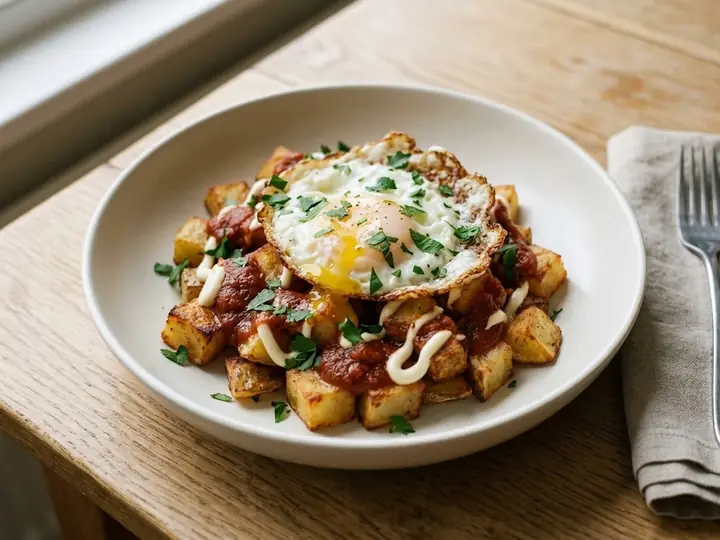

11 recipes · all written for one
Spanish dinners for one
11 Spanish dinners, each written for a single portion, with pork, chicken, plant-based and fish on the menu. Most take around 28 minutes from start to finish.

About the food
Smoked paprika, garlic, chorizo and olive oil. Tapas-style plates suit one person perfectly.
Worth having in the cupboard
- Smoked paprikain 8 recipes
- Chopped tomatoesin 7 recipes
- Flaked almondsin 3 recipes
- Butter beansin 2 recipes
- Chicken stockin 2 recipes
Chorizo & New Potato Traybake with Peppers
Spanish-Style Chicken and Chorizo Rice
Spanish Tortilla-Style Potato & Onion Omelette
Patatas Bravas Bowl with Fried Egg
Spanish-Style Garlic Mushrooms Tapas Bowl
Spanish-Style Baked Cod with Romesco
Spanish Albóndigas in Almond-Tomato Sauce
Catalan-Style Chicken with Almonds and Sherry
Spanish White Bean & Spinach Stew (Potaje)
Spanish-Style Pisto Manchego with Fried Egg
Keep browsing
Other cuisines
ArgentinianArmenianAustralianAustrianBelgianBrazilianCanadianChileanChineseColombianCubanCypriotDanishEgyptianEthiopianFinnishFrenchGeorgianGermanGhanaianGreekHawaiianHungarianIndianIndonesianPersianIrishIsraeliItalianJamaicanJapaneseKenyanKoreanLebaneseMalaysianMexicanMoroccanDutchNew ZealandNigerianNorwegianPakistaniPeruvianFilipinoPolishPortuguesePuerto RicanRomanianRussianSenegaleseSingaporeanSouth AfricanSri LankanSwedishSwissThaiTrinidadianTunisianTurkishBritishAmericanUkrainianUzbekVietnamese